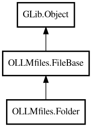

Folder
Object Hierarchy:

Description:
public class Folder :
FileBase
Represents a directory/folder in the project.
Can also represent a project when is_project = true. Projects are folders with is_project = true (no separate Project class).
Project Management
The project_files property provides a flat list of all files in the project (for dropdowns/search), while the children property provides
the hierarchical tree structure (for tree views).
Git Integration
Automatically discovers git repositories and checks if paths are ignored by git. Uses manager.git_provider for git operations.
Content:
Properties:
- public bool background_recurse { get; set; }
Whether to use background (idle callback) processing for recursive
folder scanning. Default: true (use background processing for better UI responsiveness)
- public FolderFiles children { get; set; }
List of children (files and subfolders) - used for tree view
hierarchy. Implements ListModel interface with add/remove methods.
- public int64 last_check_time { get; set; }
Last check time for this folder (prevents re-checking during recursive
scans).
- public int64 last_viewed { get; set; }
Unix timestamp of last view (stored in database, default: 0, used for
projects).
- public ProjectFiles project_files { get; set; }
ListStore of all files in project (used by dropdowns).
Creation methods:
Methods:
- public void clear_data ()
Clears all in-memory data for this folder to free memory.
- public async void load_files_from_db ()
Load project files from database.
- public async Folder? make_children (string file_path) throws Error
Creates child folders recursively until reaching the target file path.
- public async void read_dir (int64 check_time, bool recurse = false) throws Error
Load children from filesystem for this folder. Handles async file
enumeration, symlink resolution, and updates Folder.children. Excludes .git directories and other hidden/system folders.
Inherited Members:
All known members inherited from class OLLMfiles.FileBase
All known members inherited from class GLib.Object
- @get
- @new
- @ref
- @set
- add_toggle_ref
- add_weak_pointer
- bind_property
- connect
- constructed
- disconnect
- dispose
- dup_data
- dup_qdata
- force_floating
- freeze_notify
- get_class
- get_data
- get_property
- get_qdata
- get_type
- getv
- interface_find_property
- interface_install_property
- interface_list_properties
- is_floating
- new_valist
- new_with_properties
- newv
- notify
- notify_property
- ref_count
- ref_sink
- remove_toggle_ref
- remove_weak_pointer
- replace_data
- replace_qdata
- set_data
- set_data_full
- set_property
- set_qdata
- set_qdata_full
- set_valist
- setv
- steal_data
- steal_qdata
- thaw_notify
- unref
- watch_closure
- weak_ref
- weak_unref